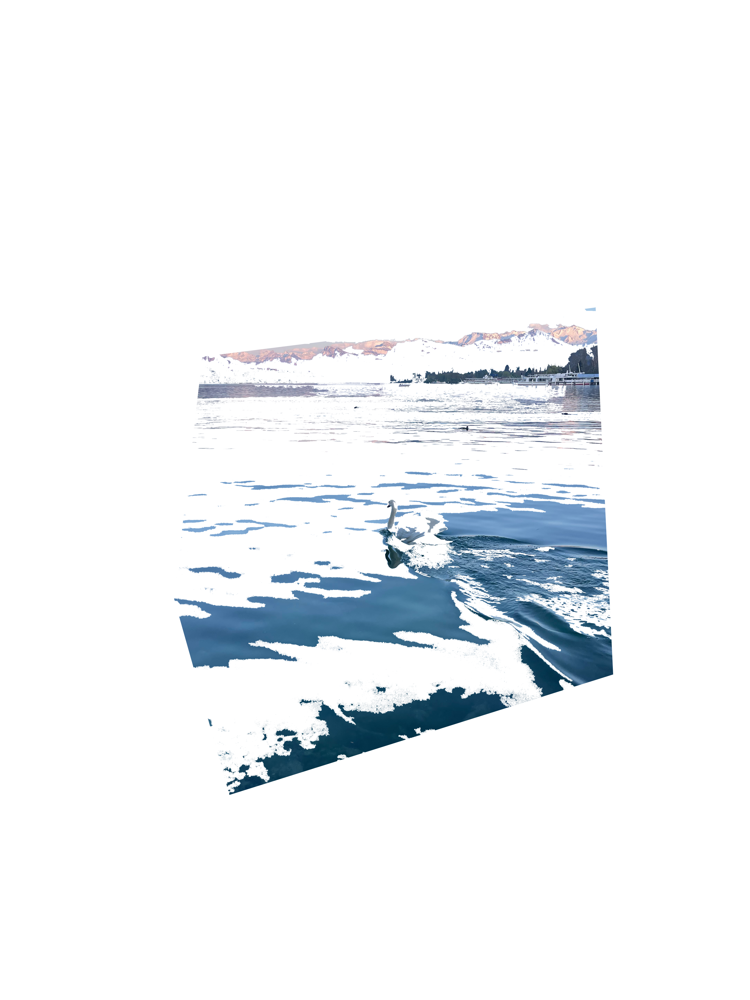
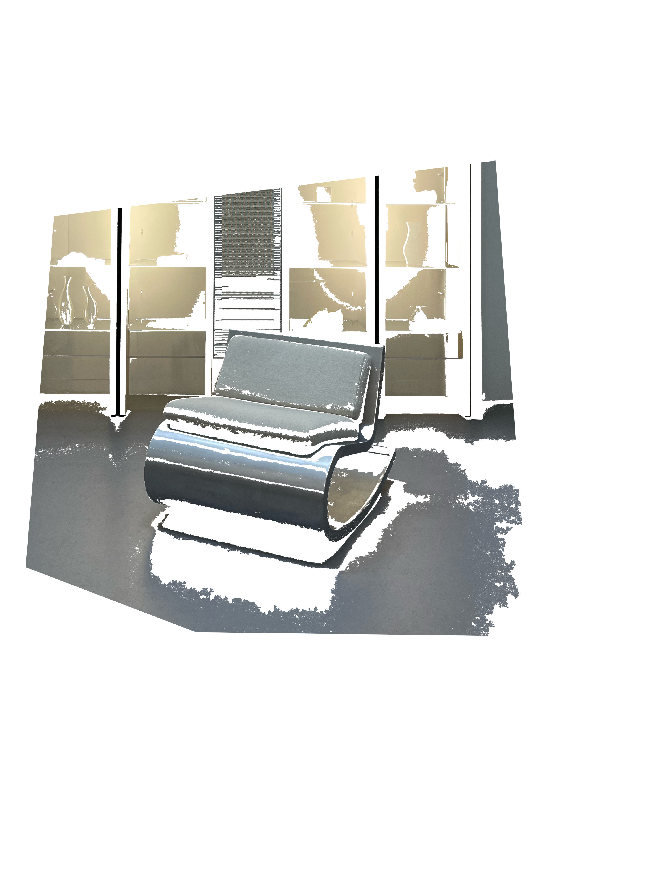
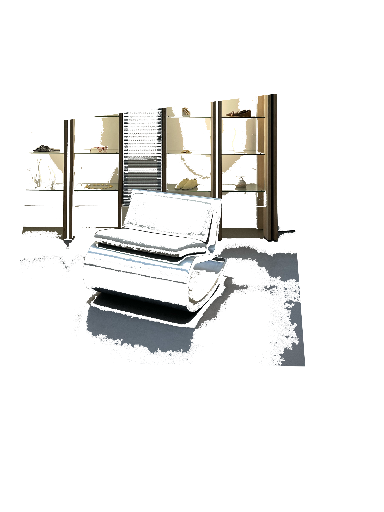
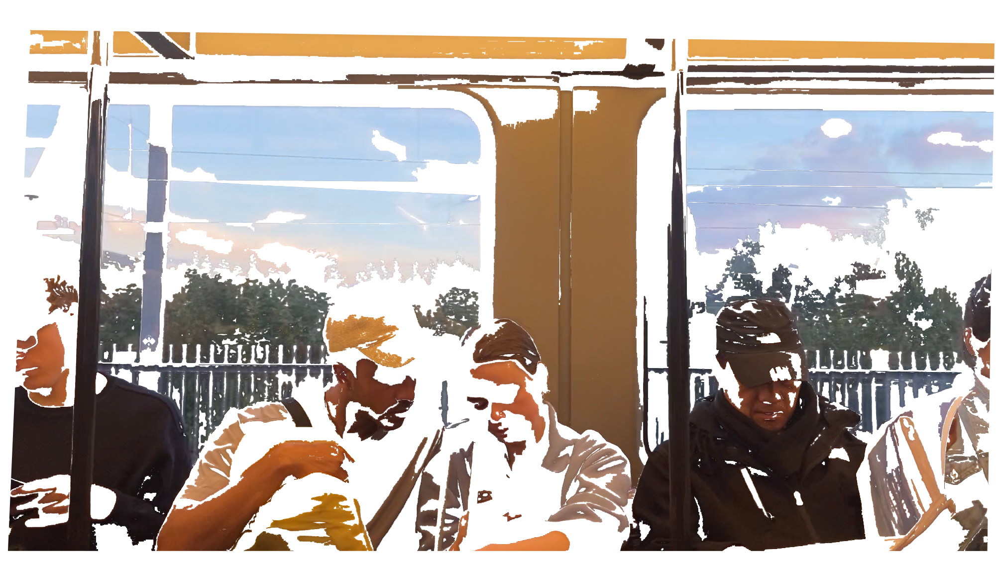
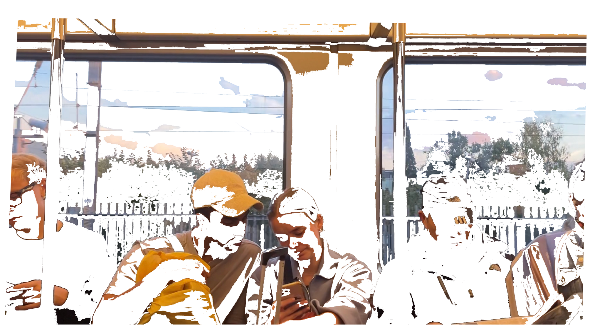

Fused Remnants
As I left Korea and traveled here and there, I took photos and kept notes—small records of where I’d been. Each journey, each moment, felt vivid and full, charged with the anticipation I carried when I stepped out the door.
I find myself romanticizing and merging those memories. Places blur, moments collapse into each other. I no longer remember exactly where or when things happened. Was that painting in the National Gallery in London, or the Rijksmuseum in Amsterdam? Was the park where I ate an apple in Lausanne—or maybe Zurich? The long hours stuck in the airport, the disappointment over the food I had been looking forward to, The flu that knocked me out without warning—all of it fades. What remains are the beautiful things: blue skies, green grass, cold beer, a soft breeze.
I deconstruct and layer images—fragments of memory taken apart, rearranged, and gently merged. They form new landscapes, where places and moments overlap,
and one memory slips into another. What’s left is faint, but vivid. Quiet, but lasting.
한국을 떠나 이곳저곳을 여행하며 사진과 일기를 많이 모아두었다. 기대를 한껏 품고 집을 나서면, 그때부터 마주하는 모든 순간들은 유난히 강렬하게 다가온다.
나는 종종 그 기억들을 미화하고, 병합한다. 장소와 시간이 엉키고, 감정과 장면이 흐릿하게 뒤섞인다. 어떤 풍경이 어디였는지, 어떤 순간이 언제였는지. 그때 그 작품이 런던의 내셔널 갤러리에 있었는지, 암스테르담의 국립박물관이었는지는 잘 기억나지 않는다. 그날 누워 사과를 먹었던 공원이 로잔이었는지, 취리히였는지도 확신할 수 없다. 비행기가 지연되어 몇 시간을 꼼짝없이 공항에 갇혀있었던 일도, 기대했던 음식에 한껏 실망한 일도, 예고없이 걸려버린 독한 감기에 앓아누웠던 일도 전부 희미해지고 파란 하늘, 푸른 잔디, 시원한 맥주, 선선한 바람 같은 것들이 또렷하다. 결국 내게 남는 것은 아름다운 것들뿐이다.
나는 이미지를 분해하고, 해체하고, 다시 겹쳐 쌓아간다. 서로 다른 기억의 조각들은 시각적으로 연결되고, 하나의 새로운 풍경처럼 섞이며 병합된다. 그렇게 희미하지만 강렬한, 조용하지만 깊게 남는 기억의 풍경들이 나를 이뤄나간다.








